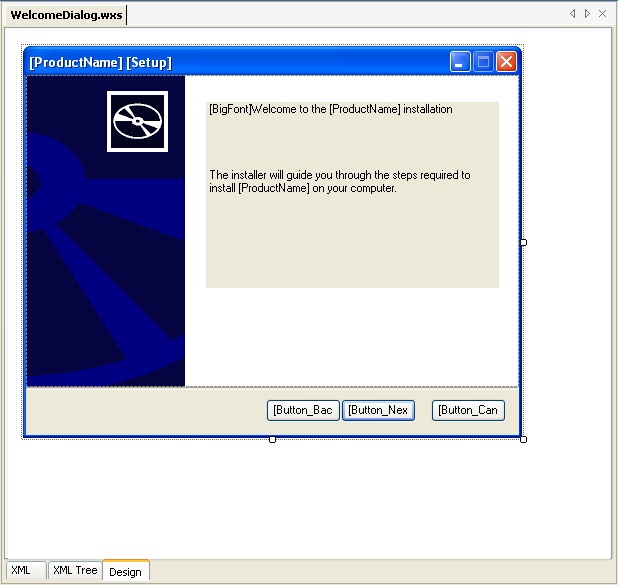

Support for creating WiX setup packages is now available in SharpDevelop 2.1. It was originally disabled in SharpDevelop 2.0, but has now been re-enabled and some new features have been added. It is still a work in progress. Some parts are not quite finished and there are some missing features, but it is currently being used to build and maintain the installer for SharpDevelop itself. At the moment SharpDevelop ships with WiX 2.0.4221, but it will be updated to 2.0.4415.0 shortly.
The next sections will look at the WiX support in more detail.
To create a new WiX project, from the File menu, select New and then select Solution.... In the New Project dialog select the Setup category.
SharpDevelop has two WiX project templates available
This project template creates a Solution (.sln), a WiX Project (.wixproj) and a minimal WiX Setup file (.wxs).
The Setup project template creates a basic WiX project which can be built immediately after creation.
The installer created by this project installs a License.rtf file to the installation directory.
The Setup project template also has its own dialogs which can be customised.
The Setup project is the project we will be using in this walkthrough.
Building the WiX project is done in the same way as for other projects in SharpDevelop from the build menu.
Output messages from the WiX compiler and linker are displayed in the Output window and any errors are added to the Errors window.
By default the project will build an MSI file. You can choose to create a merge module (.msm) or WiX Library (.wixlib) from the project options. Select the project in the Project Browser, then from the Project menu select Project Options.
From the Application tab you can change the output type to msi, msm or wixlib.
To run the installer, select Run from the Debug menu or press F5. The installer will then be built and run and you will see the first dialog of your installer.
You can either have one big WiX setup file (.wxs) or split the project up into several different files. The WiX MSBuild tasks will compile all the WiX files and link them all into one installer.
To add a new WiX file, select the project in the Project Browser window, right click, select Add and then select New Item.... From the New File dialog selecting the Setup category will show you the WiX file templates.
To add a wixlib to your project, select WiX Libraries in the Project Browser, right click and select Add WiX Library.
This opens up the file dialog where you can browse to one or more wixlibs and add them to the project.
WiX extensions can be added to the project in the Compiling, Library and Linking tabs available from the project options. The Compiling tab determines what extensions are passed to Candle the WiX compiler. The Linking tab determines what extensions get passed to Light the WiX linker. The Library tab determines what extensions get passed to Lit the Wix Library Tool. If you are creating a setup package (.msi) then typically you should put the extensions in the Compiling and Linking tab. If you are creating a WiX Library (.wixlib) then you need to put the extensions in the Library tab.
The extensions can either be typed in directly into the Extensions text box, one per line, as shown above, or you can click the Add button to open the Add Extensions dialog and select one or more of the standard extensions WiX provides.
Preprocessor variables can be added in the Preprocessing tab available from the project options.
In the screenshot above the DATADIR variable is defined. Generally the variable values will just be strings, but you can also use MSBuild properties. In the screenshot above the SharpDevelopBinPath MSBuild property is being used. You can use MSBuild properties here since these properties will be expanded before WiX compiles anything.
In the UserInterface.wxs file the DATADIR preprocessor variable is referenced as shown below:
<Binary Id="dialog.bmp"
SourceFile="$(var.DATADIR)/default-dialog.bmp"
/>
To open a setup dialog in the designer, open the WiX file, move the cursor so it is inside the dialog element, then click the Design tab.

You can also open a dialog in the designer from the Setup Dialogs Window, which is described in the next section.
You can have multiple dialogs defined in one WiX file or create one file per dialog, it is up to you. If you have multiple dialogs then you need to move the cursor inside the dialog element before you select the Design tab otherwise the designer will not know which dialog to load. If you have only one dialog element in the file then the cursor can be anywhere in the WiX document and does not need to be inside the dialog element.
In the designer you can reposition, resize and remove existing controls. You can also add new WiX controls from the Setup Dialog Controls tab by dragging them to the dialog.
At the moment not all the WiX controls are supported and WiX specific properties are not available in the properties window.
To open the Setup Dialogs window, from the View menu select Setup and then select Dialogs.
The Setup Dialogs window is then opened.
This window lists all the dialogs available in the project. You can open a dialog into the designer by right clicking it and selecting Open. Or view its XML by selecting View Code.
To open the Setup Files Editor, from the View menu select Setup and then select Files.
The Setup Files Editor will look at all the WiX files in the project for the TARGETDIR Directory element or the DirectoryRef element. Once this is found then it will show the directories, components and files that will be installed.
The left hand side of the editor shows the files in a tree view. On the right hand side of the editor you can modify the properties of the currently selected item.
You can add directories, files and components to your installer by right clicking a tree node, selecting Add and then choosing an item to add.
To add a directory and all its contents recursively to your setup, select the tree node where you want your directory added to, then right click and select Add Directory.
This opens the Browser for Folder dialog. Select the directory and then click OK to have that directory and all its contents added to the setup package. Every file added will have its own component.
The WiX integration is not completely finished. Here is a list of items that will hopefully be added at some point.
Improve the files editor.
Add GUI Editors for:
There are a few other applications and plug-ins available that can be used to create WiX installers instead of SharpDevelop. Here is a list of the ones I am aware of.
Votive is a Visual Studio plug-in that you can use to create WiX setup packages from inside Visual Studio.
Just a few days ago, September 15th, Justin Rockwood released Votive version 3, which supports Visual Studio 2005. It does not have a dialog designer, but that is on its list of features that will be added in the future.
WiX Edit is a standalone WiX Editor application, created by Jasper Keuper, that you can use to create WiX setup packages. It includes a dialog designer along with a whole host of other features, that SharpDevelop does not have. In fact you can create an installer and never look at any XML.
WixTrim is a WiX Visual Editor, created by Oleg Zelenkov, that supports a very advanced dialog designer amongst other features. The source code for the editor is also available from GotDotNet. Unfortunately, WixTrim is not under active development like the previous two.
If you want to learn more about WiX then a fantastic WiX tutorial, created by Gabor Deak Jahn, is available online.